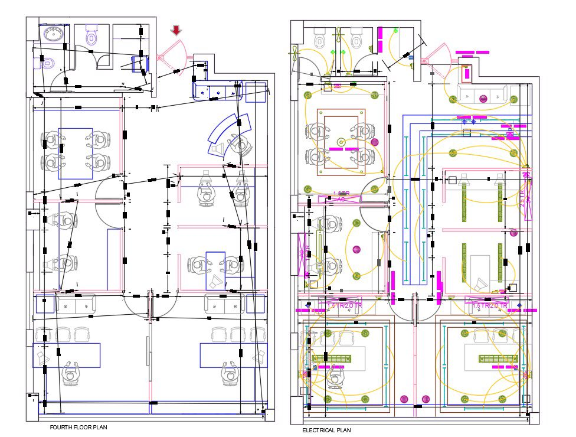

كهرباء عام

الشرح والأهمية: يهدف هذا التخصص إلى تزويد الطلاب بالأساسيات والمبادئ الكهربائية العامة، وطرق التعامل مع التيار، المولدات، والمحولات. وتكمن أهميته في إعداد فنيين متخصصين لقراءة المخططات الميدانية والتعامل السليم والأمن مع الشبكات الكهربائية الحيوية.
تمديدات داخلية

الشرح والأهمية: يركز التخصص على تصميم وتطوير التمديدات الكهربائية في المباني السكنية والتجارية، وتوزيع لوحات القواطع ومنافذ الطاقة والأحمال الكهربائية. وتكمن أهميته في ضمان السلامة العامة والوقاية من المخاطر الكهربائية وتأمين تدفق التيار بكفاءة.